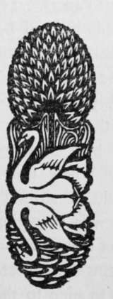

Accessories, Furniture, Etc
Description
This section is from the book "The Barnet Book Of Photography", by Herts Barnet. Also available from Amazon: The Barnet Book Of Photography.
Accessories, Furniture, Etc
The budding tiro may be pardoned if, when starting photographic portraiture, he is prompted to imitate the style of some brother professional, and introduce the time-honoured table with vase of flowers. As we are not dealing with studio portraiture this style does not concern us just now. But for home portraiture anything so formal as the style just suggested would be quite out of harmony with the chief idea. Ordinary people in their own homes do not as a rule put themselves with their backs to a wall and give up their time to staring into vacancy. Nor do they find much comfort or convenience from the too close proximity of small top-heavy tables overloaded with vases, picture-frames, and other drawing-room nicknacks. If you elect to use a table have a practical one, and let the articles on it be real, practical, and appropriate a man may have a writing-pad, or book and paper-knife, a pair of gloves, etc. a woman may have her work-basket, fancy work, knitting, etc, or some other outward and visible sign of her laudable occupations.
The "engagement" or occupation of the figure must always be quite real. To put a violin into the hands of one who does not play this instrument is at once to betray your ignorance of your craft, for almost certainly will he hold it in such a way as to show that he is not a violinist. But if he be a fiddler he will probably have his most characteristic facial expression when handling his "little box wi' strings," but also his hands, which without the instrument seem ungainly, will at once seem natural and graceful directly he begins to handle his favourite companion.
Fig. 1.
Fig. 2.
Some Schemes of Lighting are shown in the accompanying diagrams (Figs. 1-6). In each instance, we suppose the home studio to be a square room with a window in the centre of one of the side walls. This window opening is on our right in the several ground "plan arrangements shown. In each case the sitter is represented by a small circle and the position of the camera by three small dots, which may be taken as suggesting the three points of a tripod. The double line behind the sitter is the background and the single line the reflector.
In Fig. 1 we show the beginner's usual plan of placing the figure close up to the window. Background and reflector are usually unknown in the first few efforts, but we show their position most likely to give the best effect in this undesirable position. In such a case as this the exposure should be generous without being excessive, and a dilute developer will give a softened rendering of what probably will at best be a somewhat harsh black and white scheme of lighting.
Fig. 3.
Fig. 4.
In Figs. 2 and 3 we keep the camera in the same position as in Fig. 1, but move the other factors in the case.
Fig. 2 shows us a more promising arrangement. Here we have our sitter further from the light, so that there will be less contrast between the light and shadow sides. The exposure in such a position will not need to be any longer than, if as long as, in Fig. 1, although our sitter is further away from the window. By varying the angle and position of the reflector we can in such a position get a considerable range of differences between the light and shadow sides.
Fig. 3 is inserted as a warning, for in such a position as this we should have a practical absence of shadows and consequent flatness and loss of pictorial interest.
Fig. 4 shows us a position which is capable of yielding a considerable measure of pictorial effect. By this general style of arrangement we can get various shades of the so-called Rembrandt lighting—or what a friend calls the " new moon " style of lighting—i.e. a more or less narrow marginal light, while the greater part is in subdued tones. This position calls for generous exposure and cautious development, with watchfulness against carrying development far enough to blacken the shadow details in the print before the high lights are duly subdued and modelling suggested.
Fig 5.
Fig. 6.
In a case of this kind the half of the window next the sitter may advantageously be draped with lace curtains. These help to subdue and soften the light, and so minimise the vigour of contrast. Care must also be taken to shield the lens from the direct light of the window falling upon it. If this be not done the negative is very likely to show general fog, due to light scattered by the surface of the lens.
In Fig. 5 we have a modification of Fig. i, but being further from the window our contrasts will be less marked. If we arrange a screen of very thin muslin or waxed tissue paper in the position shown by the dotted line we can get vastly better modelling and very soft round effects. But the muslin screen means a certain increase of exposure.
F C. Lambert, M.A.
In Fig. 6 we have a position which is capable of giving a good variety of modelling according to the size and position of the reflector. This also enables us to use our lenses of longer focal length.
It may be noted also that the same background would appear lighter in such position as Fig. 3 or Fig. 6, where it gets direct light from the window, than it would in such positions as in Fig. 4 or Fig. 5. Of course the reflector will throw some light upon it, even in such position as in Fig. 4.
Conclusion
The would-be portraitist must not be content to take anything herein said with too great confidence. Indeed, it is wiser for him to suspend his judgment and regard the foregoing notes as suggestions for experiment. On the other hand, let him beware of drawing conclusions too harshly from a few such experimental trials.

Continue to:
- prev: Posing For Photographs
- Table of Contents
- next: P.O.P
Tags
paper, print, negative, exposure, lens, development, camera, focus